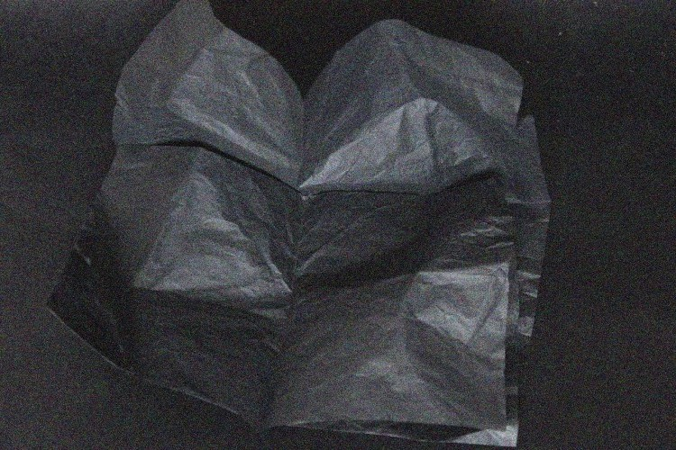

Knowledge of unconsciousness mind in design practice use

STARTING POINT.
SELFCONNECTION AND THE CAUSAL RELATIONSHIP.
If the right way to start the story is to start from the beginning, then I will find it at the present moment and do it from
“here and now” stage.
It is summer 2015, I am seating in front of my laptop in studio that takes place in The Hague (NL), few thousand kilometres from
the place I have born and grew up. I am looking at my typing fingers; my hands have a green and a blue colour tone, because of
the paint, that doesn’t go easily away; it is late evening and my lamp making warm light around; near me standing a table with
strong smell of oil paint set, and this is how, second time in my life, I am graduating graphic design bachelor.
It started 9 years ago, between a “thousand and one” activity I have had as a teenager, I naturally end up with one. The one that
brings me back to myself after I would dive into it fully, and because so - felt the most right one. That was visual art and all
that connect to its culture. This decision would be comparable to the way we comes to one or another faith and feels exactly like
this.
Making a choice or coming to one or another decisions we are naturally searching for confirmation from the outside, so am I. One
of my favorite references belongs to Lev Tolstoy “Confessions” :
“…As I now look back at that time I clearly see that apart from animal instincts, the faith that affected my life, the only real
faith I had, was faith in perfection. But I could not have said what perfection consisted of or what its purpose might be. I
tried to achieve intellectual perfection; I studied everything I could, everything that life gave me a chance to study. I tried
to perfect my will and set up rules for myself that I endeavoured to follow. I strove for physical perfection by doing all the
exercises that develop strength and agility and by undergoing all the hardships that discipline the self in endurance and
perseverance. I took all this to be perfection.”
In this piece I relate the passion to find some sort of way to exist in harmony with your "own nature", and therefore search for
this "nature" so devotedly. Even if author did not mean it, it is there for me anyway. There it comes to the key of my starting
point: I believe, one of the reason people are so encouraged to understand themselves - is the desire to understand others and
back.